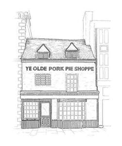

Trade Mark Journal No.2025/048 28 November 2025
UK00004297425 19 November 2025 (8,9,14,16,18,20,21,24,25,29,30,32,35,41,43)

- Class 8
- Hand-operated implements; hand-operated slicers; cake cutters; foil cutters for wine bottles; cutlery; silverware [cutlery, forks and spoons]; table cutlery [knives, forks and spoons]; biodegradable cutlery; cutlery, kitchen knives, and cutting implements for kitchen use; knives; chef knives; butchers' knives; cheese knives; cheese slicers; scissors; fruit knives; razor knives; multi-tool knives; boxes adapted for cutlery; souvenir collector spoons.
- Class 9
- Scientific, research, weighing, measuring, testing, inspecting, and teaching apparatus and instruments; recorded and downloadable media, computer software; electronic publications; audio and video clips; podcasts; scales; magnets; meat thermometers; kitchen timers; fridge magnets; decorative magnets.
- Class 14
- Precious metals and their alloys; keyrings; key chains; key fobs; charms for key rings; decorative key rings; lanyards for keys.
- Class 16
- Photographs; stationery; instructional and teaching materials; plastic sheets, films and bags for wrapping and packaging; paper and cardboard; printed matter; greeting cards; cards; gift cards; art prints; prints; printed photographs; graphic drawings; graphic reproductions; posters; gift bags; gift boxes; gift vouchers; gift packaging; cardboard gift boxes; gift wraps; paper bags; food wrappers; bags of paper for foodstuffs; carrier bags.
- Class 18
- Luggage and carrying bags; umbrellas and parasols; collars, leashes and clothing for animals; bags; tote bags; canvas bags; drawstring bags; crossbody bags; cloth bags; shoulder bags; pouches.
- Class 20
- Containers, not of metal, for storage or transport; Hampers [baskets]; wicker baskets; picnic baskets [not fitted]; presentation boards; wooden presentation boards; chalk boards for display purposes; bottle stoppers, not of glass, metal or rubber.
- Class 21
- Household or kitchen utensils and containers; cookware and tableware, except forks, knives and spoons; Brushes, except paintbrushes; articles for cleaning purposes; glassware, porcelain and earthenware; cookware, except forks, knives and spoons; tableware, cookware and containers; kitchen utensils; cutlery rests; crockery; dishes; cooking utensils; sifters [household utensils]; grills [cooking utensils]; chopping boards; carving boards; cheese boards; pastry boards; pastry brushes; pastry cutters; serving boards for food; platters; baking dishes, tins, utensils and mats; pie servers; pie pans; pie tins; pie funnels; pie tins; pie pans; pie servers; cookery moulds, moulds [kitchen utensils]; pie-making moulds; wooden pie dollies; trivets; coasters (tableware); drinkware; beer mugs; beer jugs; beer pitchers; beer glasses; wine chillers; wine pourers; corkscrews; fitted picnic baskets; picnic crockery; thermal insulated bags for food or beverages; drinking glasses; cups and mugs; flasks.
- Class 24
- Textiles and substitutes for textiles; household linen; towels; tea towels; tea cloths; kitchen towels of textile; hand towels.
- Class 25
- Clothing, footwear, headwear; aprons; shirts; polo shirts; rugby shirts; gilets; hoodies, sweaters, sweatshirts; scarves; caps; beanies; hats made of wool.
- Class 29
- Meat, fish, poultry and game; meat extracts; meat substitutes; preserved, dried and cooked fruits and vegetables; jellies, jams, compotes; cheese, butter, and other milk products; oils and fats for food; meat and meat products; bacon; sausages; charcuterie; pork and pork-based goods; pie fillings of meat; meat jellies; cheese dips; cheeses; stuffed olives; cheese products; cheese substitutes; cheese-based snack foods; preserves; preserves made from vegetables; pickles; relishes [pickles]; pâté; black pudding; prepared meals consisting primarily of meat; prepared meals consisting primarily of meat substitutes; meat based snack foods; meat substitute based snack foods.
- Class 30
- Preparations made from cereals; bread; pastries and pastry products; cakes; pies; fresh pies; meat pies; pork pies; pasties; sausage rolls; quiche; flans; mincemeat pies; puddings; prepared pie crust mixes; prepared baking mixes; stuffing mixes [foodstuffs]; candy mints; peppermint sweets; biscuits; savoury biscuits; butter biscuits; biscuits for cheese; crackers; crispbread snacks; savoury sauces, chutneys and pastes; food dressings [sauces] marinades; spice rubs; gravies; condiments; relishes; fruit loaves; fruit cakes; snack foods made from cereal; prepared savoury foodstuffs made from flour.
- Class 32
- Beers; non-alcoholic beverages; malt beer; non-alcoholic beer; craft beers; ale; beer and brewery products; flavoured beer; wheat beer; lager; flavoured beers; beer-based beverages; lagers; IPA (Indian Pale Ale); non-alcoholic cocktail mixes.
- Class 35
- Business management, organization and administration; retail and wholesale services connected with the sale of food and beverages; online and mail order services connected with the sale of food and beverages; retail services in relation to baked goods, pies, meat pies, pork pies, cakes, condiments, sauces, chutneys, biscuits, crackers, crispbreads, meats, pork-based products, sausages, charcuterie, delicatessen products, sauces, marinades, rubs, food dressings, snack foods, prepared meals, cheese, alcoholic beverages, beer, ale, lager, pre-mixed cocktails, wine, spirits, confectionery, dairy products, curated food and beverage hampers, cutlery, tableware, cookware, chopping boards, serving and presentation boards for food, wooden pie dollies, drinkware, luggage, bags, clothing, headgear, aprons, keyrings, home textiles, towels; retail services connected with the sale of subscription boxes containing food, beverages, and trinkets; retail services in relation to food cooking equipment; the bringing together for the benefit of others, of a variety of goods, enabling customers to conveniently view and purchase those goods in a retail food and beverage store or from a catalogue or Internet website specialising in food and beverage products by mail order or by means of telecommunications.
- Class 41
- Education; providing of training; entertainment; cultural activities; arranging, conducting and organisation of workshops; educational and entertainment services relating to cooking; arranging and conducting of entertainment and cultural events and activities; arranging and conducting of food and beverage tasting events for entertainment purposes; arranging of demonstrations and workshops for entertainment purposes; organizing, conducting and arranging of guided tours; providing facilities for entertainment; conducting of educational events for young people in preparation for careers in the fields of manufacturing, wholesaling and retailing; museum services; museum exhibitions; consultancy, information and advisory services in relation to the aforesaid.
- Class 43
- Services for providing food and drink; restaurant and bar services; delicatessens [restaurants]; takeaway food services; café services; coffee shop services; catering services; consultancy, information and advisory services in relation to the aforesaid.
Samworth Brothers Limited
Representative: Addleshaw Goddard LLP